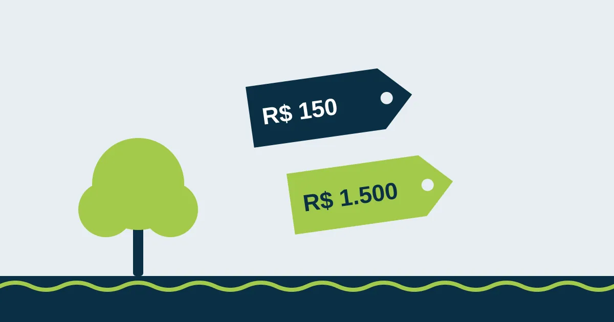

Quanto custa podar uma árvore na Região dos Lagos (e por que o “barato” pode sair caro)

Você pediu três orçamentos para a mesma árvore e recebeu três valores completamente diferentes. Um deles é bem mais barato. Dá vontade de fechar logo. Mas por que a diferença é tão grande? E o que está (ou não está) incluído em cada preço?
Vamos ser transparentes: abaixo estão as faixas que praticamos na Região dos Lagos e os fatores que fazem o preço subir ou descer.
Faixas de preço de referência
| Porte da árvore | Faixa de preço* | Exemplo |
|---|---|---|
| Pequeno porte | R$ 150 a R$ 400 | Árvores de até cerca de 5 m, fáceis de acessar, como frutíferas de quintal. |
| Grande porte | R$ 400 a R$ 1.500 | Árvores altas, com copa larga, perto de casa, muro ou rede elétrica. |
*Valores de referência para poda. O preço final só sai depois da avaliação da árvore, por fotos ou visita.
O que faz o preço mudar
- Altura e tamanho da copa: quanto mais alto, mais tempo, equipamento e gente.
- Acesso: árvore no meio do quintal, sem passagem para caminhão, exige descer galho por galho com cordas.
- O que está embaixo: telhado, piscina, carro, muro ou rede elétrica pedem cortes controlados e mais cuidado.
- Tipo de serviço: limpeza de galhos secos custa menos que redução ou equilíbrio de copa; remoção completa é outro orçamento.
- Espécie: palmeiras altas, árvores com espinhos ou madeira muito dura dão mais trabalho.
- Retirada dos resíduos: galhos e folhas precisam ir para um local adequado, e isso tem custo.
- Laudo e autorização: quando a prefeitura exige, o laudo técnico entra no orçamento.
- Urgência: árvore caída ou galho pendurado depois de temporal exige atendimento rápido.
Por que o “barato” pode sair caro
O orçamento muito abaixo da média quase sempre deixa algo de fora. Os custos aparecem depois:
- Multa por poda drástica: o jeito mais rápido (e barato) de podar é “baixar” a árvore de uma vez. Em Cabo Frio, tirar mais de 30% da copa é proibido por lei, e a multa vem para o dono do imóvel.
- Serviço sem autorização: sem pedido na prefeitura, quem responde na fiscalização é você.
- Danos ao imóvel: galho que cai no telhado, no carro ou no muro do vizinho. Quem não tem técnica nem equipamento costuma “deixar cair e ver no que dá”.
- Acidente com o trabalhador: poda em altura sem equipamento de segurança é uma das atividades mais perigosas que existem, e um acidente dentro do seu terreno vira problema seu também.
- Entulho deixado para trás: pilha de galhos na calçada também pode gerar multa.
- Árvore doente depois: cortes mal feitos apodrecem e, em pouco tempo, você paga de novo, às vezes pela remoção da árvore inteira.
Como comparar orçamentos
Antes de fechar, pergunte a cada empresa:
- O que exatamente será cortado e quanto da copa vai sair?
- A retirada e o descarte dos galhos estão incluídos?
- Quem cuida da autorização da prefeitura?
- A equipe usa equipamento de segurança para trabalho em altura?
- Vocês emitem nota fiscal?
Se as respostas forem vagas, o preço baixo provavelmente tem motivo.
As informações sobre leis e valores refletem a legislação e a prática na data de publicação. Regras municipais podem mudar: confirme sempre com a Secretaria de Meio Ambiente da sua cidade.
Quer resolver isso com segurança?
Mande fotos da árvore pelo WhatsApp e receba uma avaliação e um orçamento da Poda Azul.